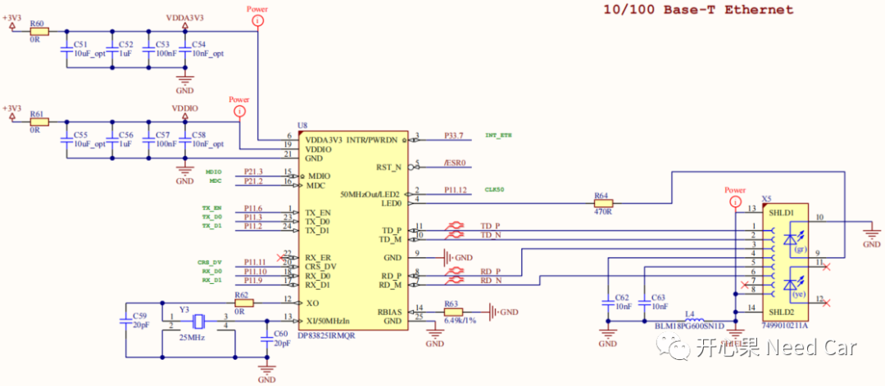
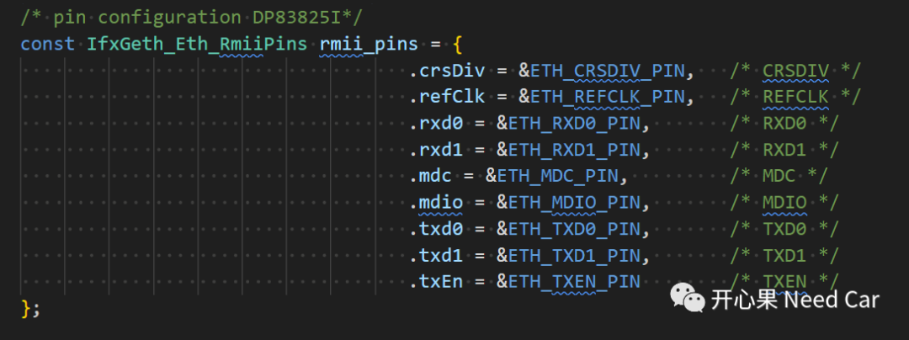
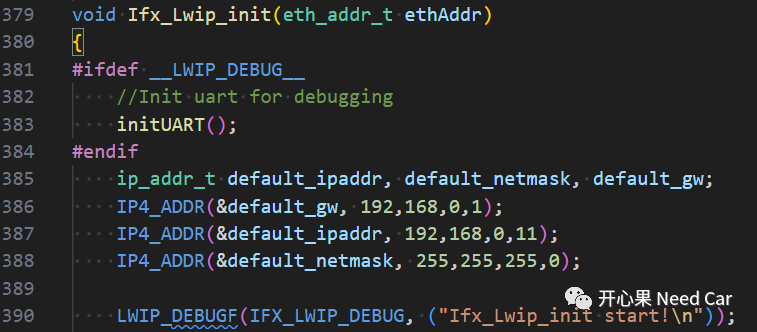
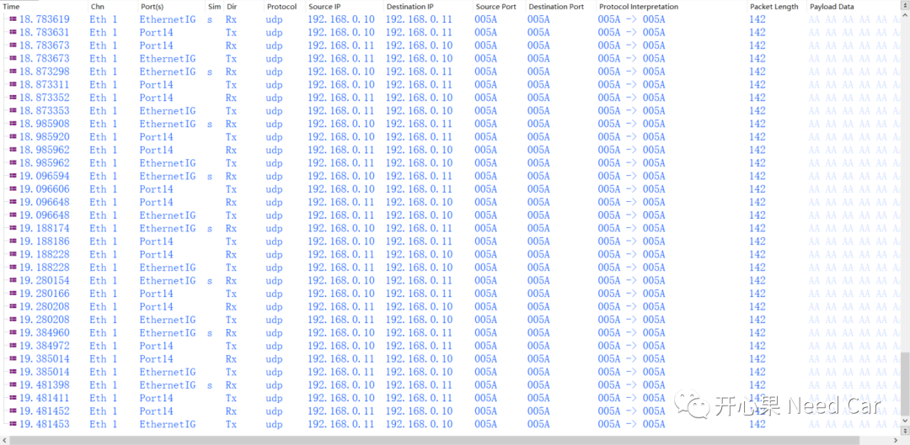
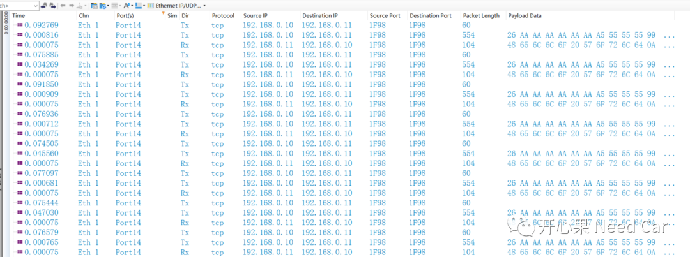
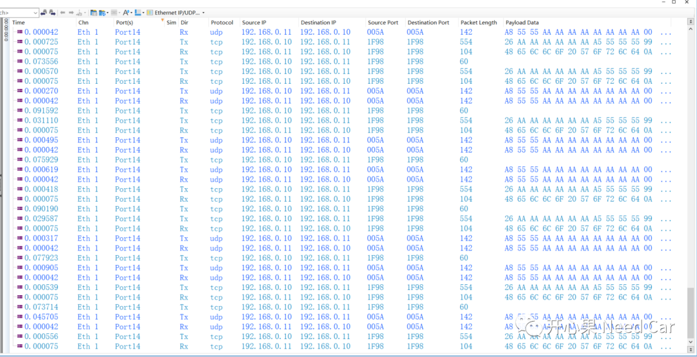

开心果 Need Car · 2023-08-07T14:37:00+08:00 · 微信原文
目前的整车电子电器架构中，Ethernet的应用已经非常普遍，可以说，到了整车标配的程度。所以，汽车嵌入式工程师掌握Ethernet，也愈发的必要。如果想透彻的理解Ethernet，不能仅仅停留在协议层面，结合实例"跑"起来，才能对问题有更深刻的理解。
本文，基于TC375 Demo+Lwip，对UDP（User Datagram Protocol，用户数据报协议）、TCP（Transmission Control Protocol，传输控制协议）示例进行了二次开发。对于移植过程中的注意点进行说明，最后，给出工程源码。
1、Lwip移植说明



struct udp_pcb* g_UDPPcb;/******************************************************************************* 描述 : 初始化UDP Server* 参数 : 无* 返回 : 无******************************************************************************/static void UDP_server_init(void){ip_addr_t rmtipaddr;IP4_ADDR(&rmtipaddr, 192,168,0,10);/* 创建UDP协议控制块 */g_UDPPcb = udp_new();if (g_UDPPcb != NULL){#define UDP_LOCAL_PORT 90/* pcb：指定一个连接(pcb)ipaddr：绑定的本地IP地址。如果为IP_ADDR_ANY，则将连接绑定到所有的本地IP地址上port：绑定的本地端口号。注意：千万不要和其它的应用程序产生冲突 */err_t err = udp_bind(g_UDPPcb, IP_ADDR_ANY, UDP_LOCAL_PORT);if (err == ERR_OK){/* ipaddr:设置连接的远程主机IP地址port:设置连接的远程主机端口号 */udp_connect(g_UDPPcb, &rmtipaddr, UDP_LOCAL_PORT);/* 注册接收回调函数 */udp_recv(g_UDPPcb, UDP_server_receive_callback, NULL);}else{/* 删除控制块 */udp_remove(g_UDPPcb);}}}static void UDP_server_receive_callback(void *arg, struct udp_pcb *upcb,\struct pbuf *p, const ip_addr_t *addr, u16_t port){/* 数据回传 */udp_sendto(upcb, p, addr, port);/* 释放缓冲区数据 */pbuf_free(p);}
提示：UDP绑定的Port Number = 90。
（四）TCP Server代码实现
struct tcp_pcb* g_TCPPcb;void TCP_server_init(void){g_TCPPcb = tcp_new();if (g_TCPPcb != NULL){err_t err = tcp_bind(g_TCPPcb, IP_ADDR_ANY, TCP_LOCAL_PORT);if (err == ERR_OK){g_TCPPcb = tcp_listen(g_TCPPcb);tcp_accept(g_TCPPcb, tcp_server_accept);}else{memp_free(MEMP_TCP_PCB, g_TCPPcb);}}}/******************************************************************************* 描述 : 客户端接收回调函数******************************************************************************/static err_t tcp_server_accept(void *arg, struct tcp_pcb *newpcb, err_t err){/* 注册接收回调函数 */tcp_recv(newpcb, tcp_server_recv);return ERR_OK;}/******************************************************************************* 描述 : 接收回调函数******************************************************************************/static err_t tcp_server_recv(void *arg, struct tcp_pcb *tpcb,struct pbuf *p, err_t err){uint32_t i;if (p != NULL){struct pbuf *ptmp = p;while(ptmp != NULL){for (i = 0; i < TCP_SEND_DATA_LEN; i++){TCP_RecData[i] = *((char *)p->payload + i) + 2;}ptmp = p->next;}tcp_recved(tpcb, p->tot_len);/* 释放缓冲区数据 */pbuf_free(p);/* 发送数据 */tcp_write(tpcb, TCP_RecData, TCP_SEND_DATA_LEN, TCP_WRITE_FLAG_COPY);}else if (err == ERR_OK){tcp_recved(tpcb, p->tot_len);return tcp_close(tpcb);}return ERR_OK;}



2、源码链接
（一）待优化
本文的示例中，TCP的发送不稳定（发送一段时间挂掉），还需要优化。
往期精彩回顾
基于Hightec+TC375TP的RT-Thread移植详解